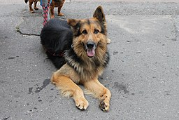

General Programming (Software) Topics

- C/C++
- JavaScript
- Java
- Python
This page describes my general set of interests. First are listed those pertaining to professional stuff, followed by things of a lighter nature.
All images taken from Wikimedia Commons.

Of course, I enjoy things like taking walks, admiring scenery and architecture, and sampling interesting foods now and then. 😀
Of course, as it arises, being with family and friends brings a fulfillment nothing else can.
This somehow popped into my head as being apt for a page such as this. While the list items here are numbered, it's done more for emphasis; there is no actual ranking implied here.
Sometimes known as "K&R" according to the authors' last initials. While old, it's a book worthy of the recognition it receives. The writing style is cogent and professional, characterized by an enviable terseness - in a word, fantastic. You wish that every programming language had its own K&R-style book.
A no-nonsense, professionally written Lua tutorial by the authors of the language itself. Not so difficult that it would be off-putting for enthusiasts, yet challenging and stimulating enough for you to learn and master a great deal. To go through the second part of the book (the C API), you need to know C.
A deceptively simple but profound book that will tutor you on the proper use of recursion. Overall, one of the most enjoyable pieces of technical material I've ever read.
| Name | Image |
|---|---|
| Cat | |
| Dog |  |